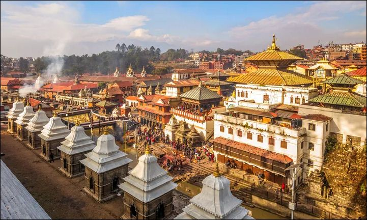

10 Best Places To Visit In Nepal (2023) | Top Tourist Destinations in Nepal
Some Surprising & Shocking Facts about Nepal
Tourism is the largest industry in Nepal & is one of the largest source of foreign exchange and
revenue for the country. With the highest numbers of world's top mountains, about 8 out of 10 are in
Nepal.
Nepal is a hotspot destination for tourists, mountaineers, rock climbers & people seeking adventure.
Mount Everest being the highest mountain peak in the world is located in
Nepal. Mountaineering and other types of adventure tourism and ecotourism are some of the important
attractions for
visitors. The world heritage sites like Lumbini ( birthplace of Buddha ), is located in the south of the
West
region of Nepal (which despite the name is located in the center of the country) and there are other
important religious pilgrimage sites throughout the country. The tourist industry is seen as a way to
alleviate poverty and achieve greater social equity in the country. Tourism brings $471 million a year
to Nepal.
According to the research & statistics in 2012, tourism was in growth rate of 9.8%. According to
statistics from Nepal Tourism Board, a total of 598,204 foreign tourists visited the country via
aerial route in 2012. The government of Nepal declared 2011 to be Nepal Tourism Year, and hoped to
attract one million foreign tourists to the country in the given year. The government of Nepal has
also declared Lumbini Tourism Year 2012 to promote Lumbini. The government of Nepal had also
declared Visit Nepal 2020 with the aim of bringing in two million tourists by 2020. But due to the
pendemic in 2020, the visit Nepal 2020 program was badly affected due to which it affected bad impact in
some of the tourist destinations in the world.
As per the statistics of 2017, most of the tourists come to Nepal for observing the pilgrimage
sites and heritages sites of the country i.e. 70.3%, then 34.5% visit for pleasure, 13.1% of them visit
Nepal for mountaineering and trekking and remaining 18.0% of the tourists arrive for official
activities, conferences, business etc.
The tourism industry of Nepal was affected after the destructive earthquake in 2015, by the series of
earthquakes in 2015. But after the pandemic in 2020,Nepal regained its popularity in tourism sector once
again,
with high number of tourists visits every month.Nepal is one of the perfect places for travel junkies to
visit
. The adventureous places in Nepal and the heritages importances in Nepal are the major attractions for
many tourists in
Nepal in the current year 2022.
10 Best Places To Visit In Nepal (2023)
- Phewa Lake - Pokhara
- Pashupatinath Temple - Kathmandu
- Janaki Temple - Janakpur
- Chitwan National Park - Chitwan
- Ilam
- Lumbini
- Lukla
- Mount Everest
- Chandragiri Cable Car - Chandragiri Hill
- Daman - Makwanpur
Phewa Lake also known as Phewa Tal or Fewa Lake (Nepali: फेवा ताल, is a freshwater lake in Nepal formerly called Baidam Tal which is located in the south of the Pokhara Valley that includes Pokhara city and is part of Sarangkot and Kaskikot. The lake is stream-fed but a dam regulates the water reserves, therefore, the lake is classified as semi-natural freshwater lake. It is the second largest lake in Nepal. The largest in Gandaki Province after the Rara lake in the comparison to Nepal's water bodies. It is the most popular and most visited lake of Nepal from tourism point of view.
Pashupatinath Temple (Nepali: श्री पशुपतिनाथ मन्दिर) is a Hindu temple which dedicated to Lord Shiva, and is located in Kathmandu, Nepal. This temple has been classified as a World Heritage Site in 1979. This extensive Hindu temple precinct is a sprawling collection of temples, ashrams, images and inscriptions. Pashupathinath Temple is located on the banks of the divine Baramati River. The temple was built in the 5th century, and is one of seven monument groups in UNESCO's designation of Kathmandu Valley.
Janaki Temple (Nepali: जानकी मन्दिर) is a Hindu temple in Janakpur, Nepal, dedicated to the famous
Hindu goddess
Sita who was the wife of God Ram According to hindu mythology. It is an example of mixed Hindu
Nepali architecture[1] Fully built in bright white and constructed
in an area of 1,480 square metres (15,930 sq. feet) in a mixed style of and Hindu Kingdomship of
ancient
Nepal.The building is three-storied structure made entirely of stone and marble.
All its 60 rooms are decorated with the flag of Nepal, colored glass, engravings, and paintings,
with
beautiful lattice windows and turrets. According to legends and epics, King Janak ruled Videha
Kingdom
from this part of Janakpur during the Ramayana period. His daughter Janaki (Sita), during her
swyambar,
had chosen Lord Rama as her husband, and become the queen of Ayodhya. Their marriage ceremony had
occurred in the nearby temple which is also called vivaha mandap that later reconstructed by Amar
Singh
Thapa. The site was designated as a UNESCO tentative site in 2008.
Chitwan National Park is the first national park of Nepal. It was established in 1973 and was granted
the status of a World Heritage Site in 1984. It covers an area of 952.63 squared.km and it
is located in the subtropical Inner Terai lowlands of south-central Nepal in the districts of
Nawalpur, Parasi, Chitwan and Makwanpur. In altitude it ranges from about 100 m (330 ft) in the
river valleys to 815 m (2,674 ft) in the Sivalik Hills.
Chitwan National Park is famous for its wildlife and natural beauty. The national park consists of
many endangered and rare species like One horned rhinos,elephants, Gharial crocodiles and Royal
Bengal Tigers.
Tourists from all around the world visit chitwan National park to explore the wildlife and the rare
species in the world.
The place is a hotspot destinations for tourists with all the facilities for tourists.
Ilam district (Nepali: इलाम जिल्ला is one of 14 districts of Province No. 1 of
eastern Nepal. It is a Hill district and covers 1,703 km2 (658 sq mi). The 2011 census counted
290,254 population. The municipality of Ilam is the district headquarters and is about 600 km
(370 mi) from Kathmandu.
Ilam is a beautiful place for peace seekers and also for researchers. The Devi temples have a great
importance attached to them and many people come here just for pilgrimage. The major attraction of
Ilam is the
nine-cornered Mai Pokhari lake. Also known as the Abode of the Goddess, many tourists as well as
Nepalese people come to visit this place. This place is also one of the most famous places for flora
and fauna, which attracts biologists. Similarly, Gajurmukhi is also a religious spot for pilgrimages
from Nepal and India. The Mai river and its four tributaries also emerge in the Ilam district. Sano
Pathivara is another place that is famous for pilgramage.
Lumbinī (Nepali: लुम्बिनी) is a Buddhist pilgrimage site
in the Rupandehi District of Lumbini Province in Nepal. It is the place where, according to Buddhist
tradition, Queen Mahamayadevi gave birth to Siddhartha Gautama at around 566 BCE. Gautama,
who, according to Buddhist tradition, achieved Enlightenment some time around 528 BCE,[3][4] became
Gautama Buddha and founded Buddhism. Lumbini is one of many magnets for pilgrimage that
sprang up in places pivotal to the life of the Buddha.
Lumbini is the place with the most number of temples build by several nations like Maya Devi Temple,
World Peace Pagoda, Ashoka Pillar,
and many more. The place is a hotspot tourist destinations for people inside and outside Nepal. One
should visit
Lumbini and explore the different and artistic temples in his/her life .
Lukla (Nepali: लुक्ला) is a small town in the Khumbu Pasanglhamu rural municipality of the
Solukhumbu District in the Province No. 1 of north-eastern Nepal.The place is situated at 2,860
metres (9,383
ft), it is a popular place for visitors to the Himalayas near Mount Everest to arrive. Although
Lukla means place with many goats and sheep, few are found in the area nowadays.
Lukla contains a small airport servicing the region. The airport is worldwide famous airport with
the shortest runway for the
planes to takeoff and land. It features variety of shops and lodges catering to
tourists and trekkers, providing western-style meals and trail supplies. From Lukla, travellers will
take two days to reach the village Namche Bazaar, an altitude acclimatization stop for those
continuing on.
Mount Everest (Nepali: सगरमाथा) is Earth's highest mountain above sea level, located in the
Mahalangur Himal sub-range of the Himalayas. The China–Nepal border runs across its summit point.
Its elevation (snow height) of 8,848.86 Metres (29,031.7 ft) was most recently established in 2020
by the Chinese and Nepali authorities.
Mount Everest attracts many climbers, including highly experienced mountaineers. There are two main
climbing routes, one approaching the summit from the southeast in Nepal and the other from the north
in Tibet. While not posing substantial technical climbing
challenges on the standard route, Everest presents dangers such as altitude sickness, weather, and
wind, as well as hazards from avalanches and the Khumbu Icefall.
Chandragiri Hill is one of the popular sites in Nepal to visit with your families and friends. It
has grabbed the attention of several travelers all over the world due to its unmatched beauty.
The place is situated on the lap of Chandragiri Hill resides a sacred temple of Lord Shiva at an
altitude of 2551 meters.
Chandragiri Hill is also one of the popular hill stations near the Kathmandu valley, where you can
enjoy the snowfall during winter.
Chandragiri will enhance your traveling experience as the devotees of Lord Shiva come here with
offerings
on various occasions. Similarly, the panoramic
view of some of the high peaks like the Everest range, Annapurna, Manaslu, Ganesh, and more attracts
travelers to hiking. The place is famous for its long 2.5 km long cable car ride with a thrilling
experience.
Daman (Nepali: दामन) is one of the most beautiful tourist attractions in Thaha Municipality,
Makwanpur
District, central Nepal. It lies on the Tribhuvan Highway, about 77 kilometres (48 mi) southwest of
Kathmandu (about halfway to Hetauda) at an elevation of 2,322 metres (7,620 ft).
Daman has among the greatest views of the Himalayas, extending on a good day from Dhaulagiri in the
west to Mount Everest in the east.[1]
The village also contains the Everest Panorama Resort, which includes a helipad. Since the village
lies on the outskirts of Kathmandu, it provides a great opportunity for the people residing in
Kathmandu to observe its beauty and use it for means of recreation. Also, during winter, snowfall
occurs in the hills, augmenting the beauty of the village. There is religious site near called
Risheshor Mahadev Temple.